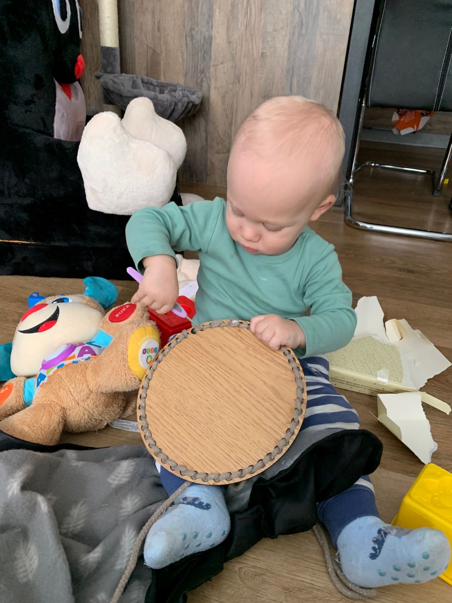
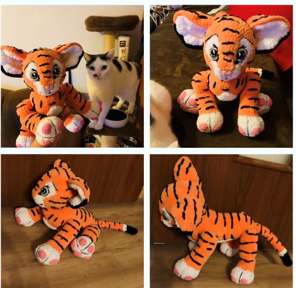
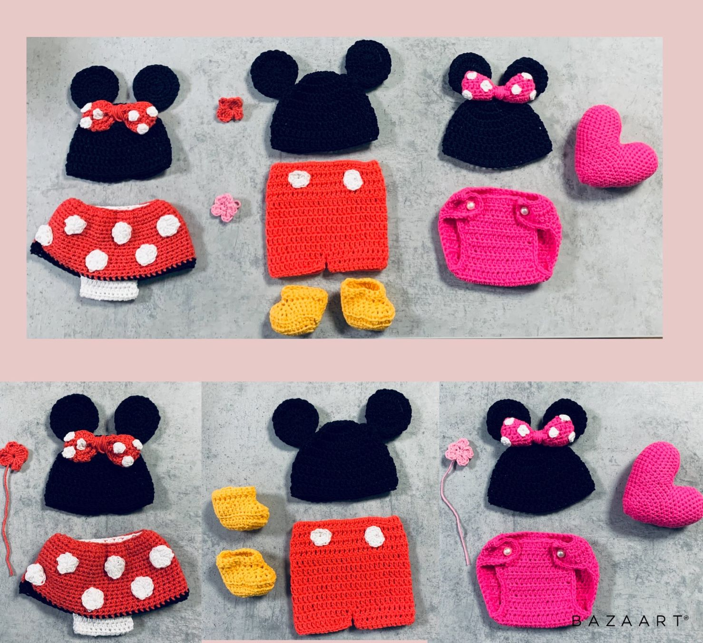
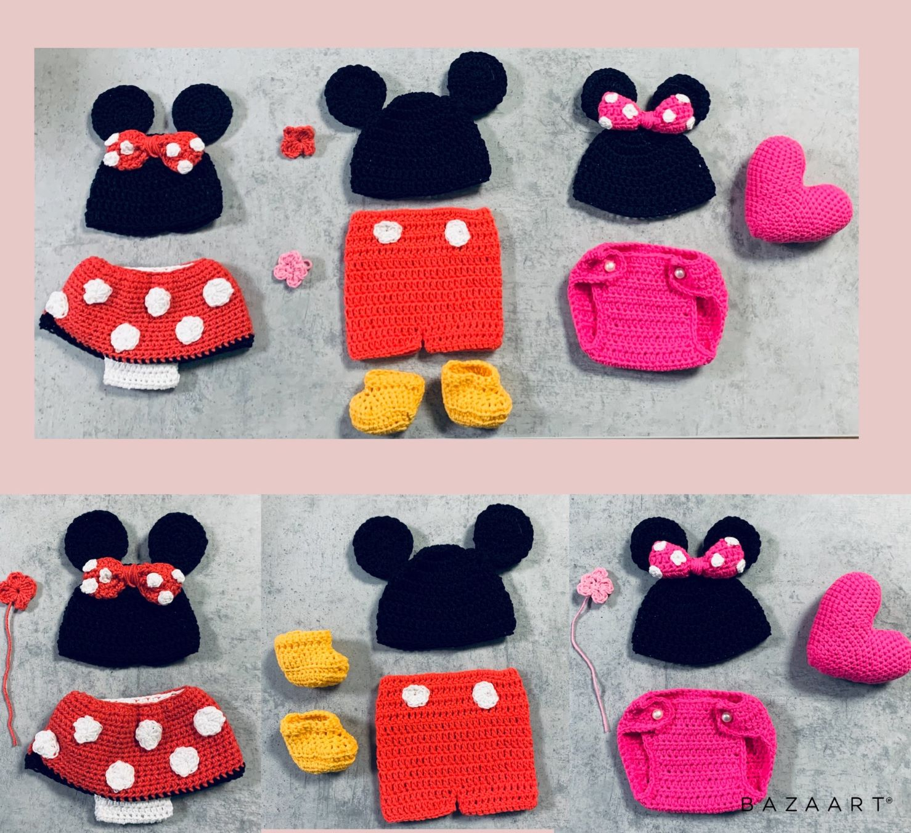

O mně

Jmenuji se Dáša.
Pracuji jako statistik, avšak nyní jsem na rodičkovské dovolené.
Baví mě sport, jako je snowboard, běhání, volejbal atd.
Během mateřské dovolené jsem začala plést a háčkovat, což mě začalo
tak bavit, že jsem se rozhodla své produkty nabízet.
Háčkované věci

Háčkované produkty mohu dodat v jakékoliv barvě.
U košíku lze vybrat styl háčkování, ale i tvar dřevěného dna.
Cena háčkovaných věcí, které jsou v sekci fotogalerie
| Produkt |
Cena |
| Pyžamožrouti/ usínáčci - koník a pejsek |
649 Kč |
| Košíky |
360-700 Kč |
| Panenky |
1199-1499 Kč |
| Medvídek |
950 Kč |
| Newboarn oblečení |
499 Kč |
Kontakt

Pokud se vám líbí má práce, můžete se podívat na Facebook, kde naleznete
další háčkované věci. Můžete mě také kontaktovat na email.
Kontakt
Dagmar Podkulová
Okolní
Těrlicko
73542
E-mail: dasa@cart.cz
Mobil: +420 603 784 925


 
